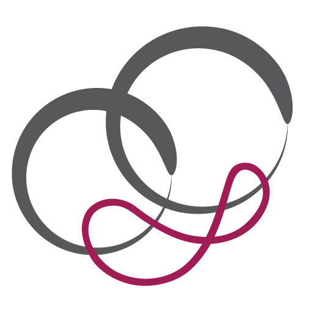

PloDar
... lebo plodnosť je dar

Víkendová oázapre bezdetných manželov
Pre tých, ktorí potrebujú nové impulzy, chcú zrelo čeliť budúcnosti, hľadajú nový prameň radosti a duchovné osvieženie.
6.–8. 11. 2026
-
Mária Šelmeciová (psychológ):
Ako v tom ostať spolu a byť tu jeden pre druhého
-
Jozef a Barbora Palaščákovci (Gallup kouči):
Talenty v manželstve: návod na porozumenie
-
Pavol a Daniela Burdovci (manželia):
Boh nás previedol